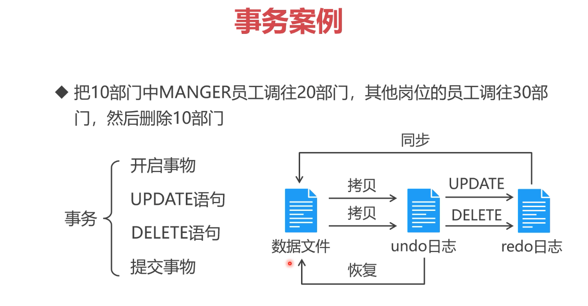

凡是过去，皆为序曲。
凡是过去，皆为序曲。All the past, all is overture.
本系列旨在系统学习提升Mysql技能，更完整内容可以参考阿里新零售数据库设计与实战
DB引擎
你可能不知道的CRUD
INSERT
情况一 Duplicate key
当批量更新，如果有重复的primary key,如果有一条失败，则全部失败。
更新时忽略错误行，继续执行该如何处理？
如： t_dept 表中已经存在 deptno = 40 的数据；
步骤一 直接插入
INSERT INTO t_dept (deptno, dname, loc) VALUES |
错误信息
Error occurred during SQL query execution |
步骤二 关键字–IGNORE
INSERT IGNORE INTO t_dept (deptno, dname, loc) VALUES |
情况二 upsert操作
目标：存在则更新，不存在则创建。
CREATE TABLE `t_emp_ip` ( |
-- 原有数据 |
目标
- 插入102、103两条数据
- 更新101对应的IP
步骤一： 错误示范
INSERT INTO t_emp_ip(id, empno, ip) VALUES |
Error occurred during SQL query execution |
步骤二 正确操作
INSERT INTO t_emp_ip(id, empno, ip) VALUES |
结果
id|empno|ip | |
步骤三 测试其他表
如果需要更新多个字段，则字句中需要罗列完整的字段。
INSERT INTO t_emp (empno,ename,job,mgr,hiredate,sal,comm,deptno) VALUES |
子查询
相关子查询就是要循环执行多次的子查询。
- 子查询：
独立于外部查询的子查询，子查询总共执行一次，执行完毕后将值传递给外部查询； - 相关子查询：相关子查询的执行依赖于外部查询的数据，外部查询执行一行，子查询就执行一次；
注：
- mysql默认关闭了缓存，所以每个
子查询都是相关子查询。 - 一般ORM开启了缓存。
SELECT empno, ename |
代替子查询
使用FROM子查询，代替WHERE子查询
- FROM子查询
只会执行一次，优先执行数据来源，所以不是相关子查询
-- 相关子查询代替方案 |
表连接
内连接
内连接里，查询条件写在ON子句或where子句，效果相同
SELECT e.ename, e.dname |
外连接
内连接里，查询条件写在ON子句或where子句，效果相差很大.
-- 保留左表所有数据和右表关联 |
返回结果
ename |ename |deptno| |
-- 左表数据必须满足 where 条件才会返回。 |
返回结果
ename |ename |deptno| |
小结
- where子句：需要满足条件才可以返回；
- on子句：完全以左表为主，
UPDATE
表连接修改
UPDATE t_emp SET sal = 10000 |
表连接删除
-- 删除t_emp、t_dept表符合条件的数据 |
事务机制
为啥数据库需要有事务机制？
类比，操作重要代码，可能先要新建一个分之，避免混乱。
同理：如果数据的写入直接操作数据文件是非常危险的事情
如：给员工工资普普涨，但中途失败了，怎么确认那些成功，哪些失败。
就需要引入事务机制。
日志文件相当于数据副本
undo & redo
数据库日志分类
- 重做日志（redo log）
- 回滚日志（undo log）
- 二进制日志（binlog）
- 错误日志（errorlog）
- 慢查询日志（slow query log）
- 一般查询日志（general log）
- 中继日志（relay log）
SQL操作的记录会被复制undo日志中；- CRUD的
结果会记录在redo日志中； - 如果CRUD没问题，将redo日志中的数据同步到
SQL文件中; - 如果同步过程中出现问题，则之后再次同步即可。
undo & redo 对于事务机制的重要性不言而喻。
事务机制
事务是一个或多个SQL语句组成的整体，要么全部执行成功，要么全部执行失败。
ACID
- 原子性：要么成功要么失败；
- 一致性：不论并发多少，必须保证结果一致性；事务隔离，不能读写其他事务的临时日志；
- 隔离性：事务相互之间隔离；
- 持久性：一旦提交，结果便是永久性的，宕机可以恢复事务日志完成数据的持久化。
参考
阿里新零售数据库设计与实战
Mysql-innoDB存储引擎(事物，锁，MVCC)
浅谈 MySQL 子查询及其优化
Explain语法
步步深入：MySQL架构总览->查询执行流程->SQL解析顺序
MySQL到底有多少种日志类型需要我们记住的！